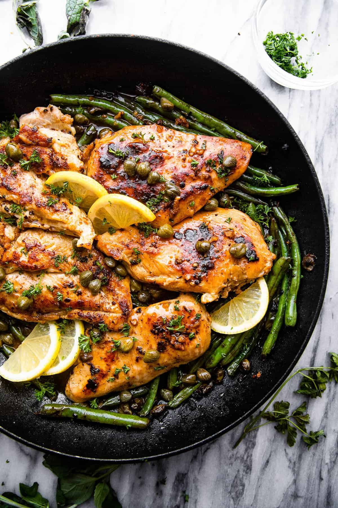

Chicken Piccata

Description
What Is Chicken Piccata
You think you know, but you have no idea.
But seriously, this is a really interesting question! If you grew up with parents that cooked often—like we did—or grew up eating out at Italian restaurants basically anywhere in America (hello, Olive Garden) you’re probably kind of familiar with “chicken piccata” as we mean it—a pan-fried chicken cutlet, topped with a lemon-butter piccata sauce. BUT! Chicken piccata as we know it doesn’t actually seem to have origins in Italy. It’s likely an Italian-American invention, a derivative of a couple of different classic Italian cooking techniques, like scaloppine which means “thin slices of meat (such as veal) sautéed or coated with flour and fried”. A lemon and butter pan sauce is a classic way of dressing pan-fried meat, and is common throughout Italy, but the (brilliant) addition of capers can’t be attributed to any one place or time. However and whenever it came into being, chicken piccata is—as far as we’re concerned—a very welcome addition to any home cook’s repertoire.
Ingredients
- 2lbs Chicken cutlets, tenders or chicken breast (halved horizontally)
- 2.5 tsp salt, divded
- 0.5 tsp pepper
- 1 cup flour for dredging
- 10 tbsp butter, cut into pieces, divided
- 4 tbsp olive oil, divided
- 1 shallot, minced
- 1 tbsp garlic, minced
- 1.5 cups chicken stock
- 1 lemon juiced (1 tbsp)
- 2 tsp lemon zest
- 2 tbsp caper, drained
- parsley, choppped, for garnish (optional)
Steps
- Season the chicken with 2 teaspoons salt and pepper on both sides. Place the flour on a plate.
Dredge the chicken in the flour and shake off any excess. Discard the flour when finished dredging.
- Heat 3 tablespoons butter and 2 tablespoons oil in a large skillet set over medium-high
until the butter has melted.
- Working in batches, taking care not to crowd the pan, add 1/2 the chicken and saute until
golden brown, about 2-3 minutes per side, until cooked through. Set the chicken aside
on a plate when they finish cooking.
- Add 3 more tablespoons of butter and 2 more tablespoons of olive oil and finish cooking the
2nd batch of chicken.
- Add the shallot to the pan drippings and sauté until soft and fragrant, about 1 minute.
Add garlic and saute for 1 minute longer.
- Add the stock and simmer until reduced by half, about 4-5 minutes.
- Reduce heat to low, then stir in the remaining 4 tablespoons butter, capers, lemon juice,
and zest to taste. Season with remaining ½ teaspoon of salt. Garnish with parsley if using.
- Serve the chicken with the piccata sauce poured over the top of the pan-fried chicken,
alongside your favorite pasta or salad.